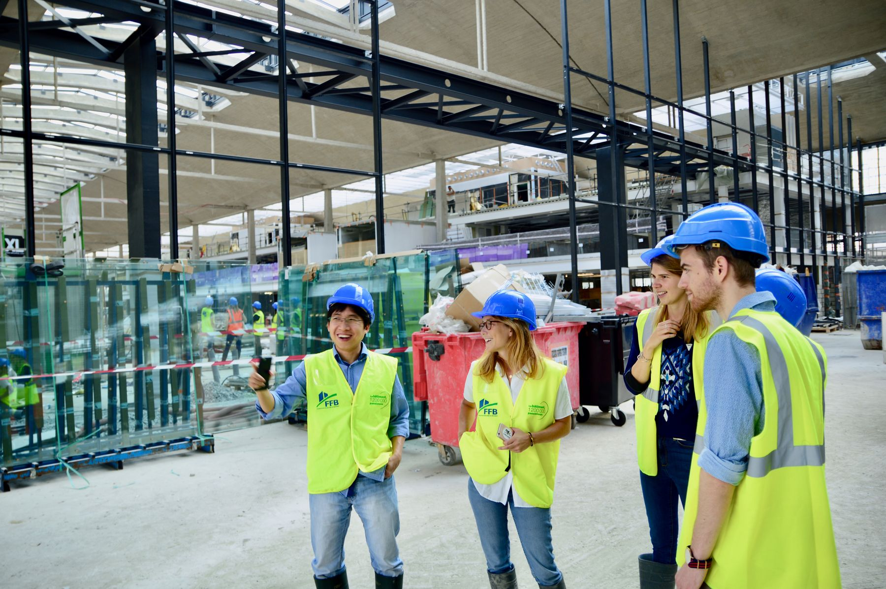
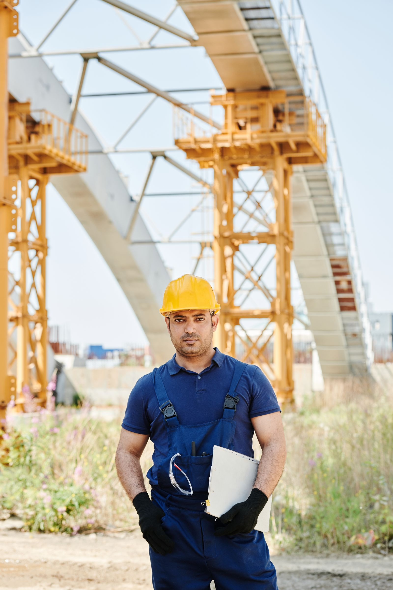
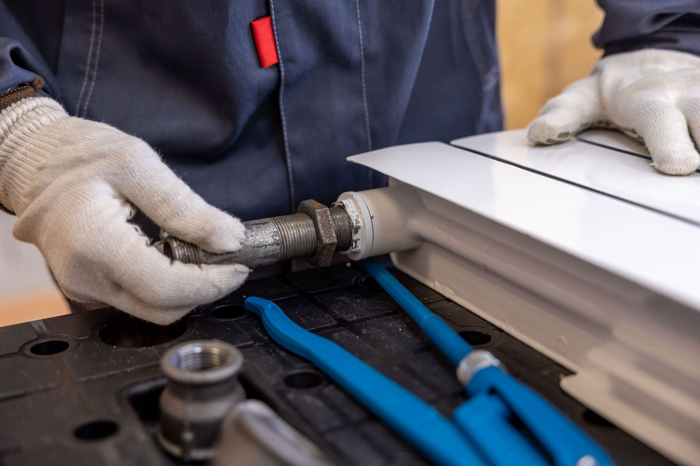
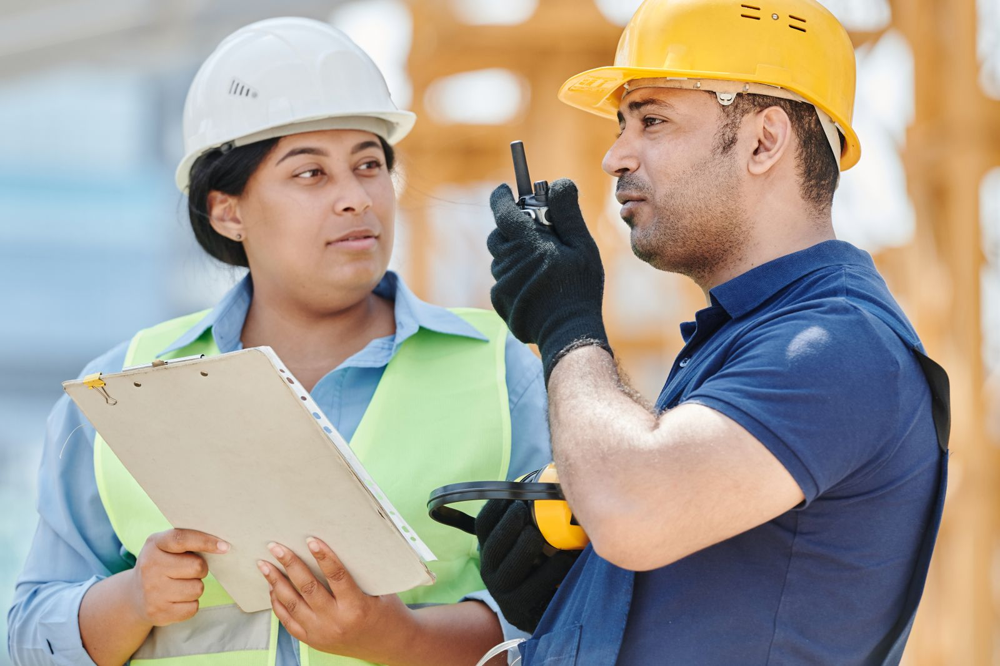

Seguridad que se traduce en decisiones concretas.
Menos improvisación. Más orden, prevención y control sobre cada etapa.
Seguridad técnica para cada proyecto
Higiene y seguridad laboral e instalaciones de gas para hogares, comercios y obras.

Prevención
Cumplimiento
Precisión técnica
Respuesta directa
01 — Servicios
Abordamos cada proyecto desde la prevención, el orden técnico y una comunicación clara con quienes confían en Hysmmo.

Prevención y seguimiento
Un servicio integral para reconocer riesgos, ordenar medidas preventivas y acompañar el trabajo cotidiano en obras y espacios laborales.

Hogares y comercios
Soluciones para instalaciones domésticas y comerciales, pensadas según las necesidades concretas de cada espacio.
Antes de ejecutar, entender
La seguridad no es un agregado al final del trabajo. Es la forma de hacerlo desde el principio.
02 — Cómo trabajamos
Contanos qué necesitás y en qué contexto. Con esa información definimos el alcance inicial y coordinamos los próximos pasos por WhatsApp.
Contarnos tu proyectoConocemos la necesidad, el tipo de espacio y el objetivo del trabajo.
Evaluamos las condiciones para definir un abordaje técnico coherente.
Ordenamos tareas, alcance y prioridades antes de comenzar.
Desarrollamos el trabajo y mantenemos una comunicación directa durante el proceso.


03 — Por qué Hysmmo
Conectamos construcción, prevención e instalaciones para comprender mejor cada proyecto.
Explicamos el alcance del trabajo y coordinamos de forma directa, sin vueltas innecesarias.
Cada intervención parte de evaluar, ordenar prioridades y definir pasos concretos.
04 — Preguntas frecuentes
Si necesitás evaluar un caso particular, escribinos y contanos brevemente de qué se trata.
Sí. Hysmmo brinda soluciones para necesidades domésticas y comerciales, además del acompañamiento en higiene y seguridad para obras y espacios laborales.
Escribinos por WhatsApp con una breve descripción del trabajo. Si podés, sumá fotos o información del espacio para orientar mejor la primera respuesta.
El alcance se define según cada caso. Primero recopilamos información y, cuando corresponde, coordinamos un relevamiento para planificar el trabajo.
Consultanos por WhatsApp indicando tu ubicación y el tipo de servicio. Te confirmamos la disponibilidad para tu zona.
Hablemos de tu proyecto
Contanos qué necesitás y coordinamos los próximos pasos directamente por WhatsApp.
Escribir al +54 9 11 3640-1274